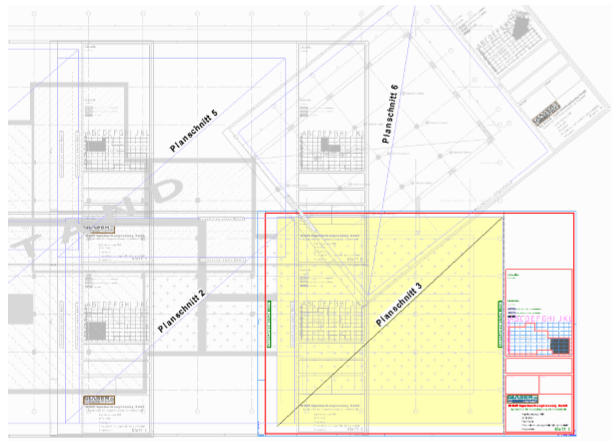

Einfügen eines zuvor definierten Blattrahmens. Öffnet den Dialog Blattrahmen hinzufügen.
Sie können mehrere Blattrahmen einfügen, um nachträglich mit der Funktion [RaAusg] mehrere Planschnitte (Teilpläne) auszugeben. So lassen sich große Pläne, die sich nicht komplett ausgeben lassen, in mehrere Teilpläne aufteilen. Für jeden Planschnitt wird ein Blattrahmen auf der Zeichnung platziert.
 |
1.Blattrahmen öffnen und ausrichten
§Wählen Sie im Dialog Blattrahmen hinzufügen die Zeichnungsdatei mit dem Blattrahmen und klicken Sie auf Öffnen.
§Geben Sie die Folie an, in die der Blattrahmen gelegt werden soll. ISBCAD schlägt die erste freie Foliennummer vor. [Folie].
|
Achtung: |
|
·Die Folie wird im Folienmanager automatisch mit "Blattrahmen" bezeichnet. Diese Bezeichnung darf nicht geändert werden! Alle Elemente des Blattrahmens werden in diese Folie transformiert. ·Neu hinzugefügte Elemente müssen in die Folie des Blattrahmens transformiert werden [Konst1 | Folien → Tr.Fen]. Nur Elemente, die in dieser Folie liegen, werden bei der Ausgabe berücksichtigt. |

§Bestätigen Sie die vorgeschlagene Foliennummer mit Rechtsklick oder geben Sie eine Nummer ein, die noch nicht benutzt wird.
§Geben Sie einen Winkel ein um den der Blattrahmen gedreht werden soll und schließen die Eingabe mit der Eingabetaste ab. [Winkel].
Alternativ: Benutzen Sie eine Winkelvorgabe bzw. die Ausrichtungsoptionen O… oder P… mit anschließendem Anklicken eines Bezugselements, um den Blattrahmen schräg auszurichten.
2.Blattrahmen platzieren
§Wählen Sie, ob Sie den Blattrahmen frei oder gezielt über die Angabe bestimmter Koordinaten auf der Zeichnung absetzen möchten. [Lage].
Beim Absetzen des Rahmens werden die Zeichenelemente mit der Farbe für "Elemente im Hintergrund" dargestellt. Die Elemente des Rahmens werden mit der Farbe für "Markieren" hervorgehoben. [Option | SysDat | Farbeinstellungen | Konstruktionsprogramm → Elemente im Hintergrund / Markieren].
1.Blattrahmen absetzen |
|
|---|---|
Freies Absetzen des Blattrahmens. §Schieben Sie den Rahmen an eine geeignete Stelle und legen Sie ihn mit Linksklick ab. |
|
Gezieltes Absetzen des Blattrahmens. §Schieben Sie den Rahmen an eine geeignete Stelle und legen Sie ihn mit Linksklick ab. §Klicken Sie einen Punkt des eingefügten Blattrahmens an. [X-Refpu.Obj]; [Y-Refpu.Obj]. §Klicken Sie den Zielpunkt an. [X-Refpu.Neu]; [Y-Refpu.Neu]. -Wenn Sie schräg liegende Blattrahmen einfügen, drehen Sie das Koordinatensystem. Siehe: Systemwinkel ändern. -Im Normalfall ist die Schaltfläche [EleAn] aktiv, damit Sie die Elemente sehen können. Nur in Ausnahmefällen sollten Sie durch Drücken der [EleAus]-Schaltfläche den Rahmen nur durch ein Rechteck darstellen. -Bei Bedarf schalten Sie die Differenzfunktion [Retan] ein, um nach dem Anklicken der Referenzlinie noch einen Abstand eingeben zu können. |
|
2.Druckbereich definieren |
|
§Legen Sie den Druckbereich mit zwei diagonalen Punkten fest, der aus der Zeichnung geschnitten werden soll. [1.Punkt Druckbereich]; [2.Punkt Druckbereich]. Der ausgedruckte Bereich wird durch den zugehörigen Blattrand oder den Druckbereich bestimmt. |
|
§Bestimmen Sie den ersten und zweiten Punkt des Druckbereichs. [1./2.Punkt X Druckb.]; [1./2.Punkt Y Druckb.]. -Tipp: Legen Sie auf dem Ursprungsblatt Hilfspunkte für den Druckbereich an. -Bei Bedarf schalten Sie die Differenzfunktion [Retan] ein, um nach dem Anklicken der Referenzlinie noch einen Abstand eingeben zu können. |
|
3.Freibereich definieren |
|
§Legen Sie den Freibereich mit zwei diagonalen Punkten fest. [1.Punkt Freibereich]; [2.Punkt Freibereich]. Dieser Bereich wird für das Schriftfeld etc. benötigt. Der Freibereich kann den Druckbereich überlappen. |
|
§Bestimmen Sie den ersten und zweiten Punkt des Freibereichs. [1./2.Punkt X Freib.]; [1./2.Punkt Y Freib.]. -Tipp: Legen Sie auf dem Ursprungsblatt Hilfspunkte für den Freibereich an. -Bei Bedarf schalten Sie die Differenzfunktion [Retan] ein, um nach dem Anklicken der Referenzlinie noch einen Abstand eingeben zu können. |
|
[Rahmenbezeichnung]
§ISBCAD schlägt "Rahmen+Index" vor.
Bestätigen Sie den Vorschlag mit Rechtsklick oder geben Sie eine Bezeichnung für den Rahmen ein. Benutzen Sie hier keine Sonderzeichen, die vom Betriebssystem als Bestandteile des Dateinamens nicht akzeptiert werden. Bei der Ausgabe als Plot- oder PDF-Datei wird die Rahmenbezeichnung Teil des vorgeschlagenen Dateinamens. Bestätigen Sie die Eingabe mit der Eingabetaste.
[Blattrahmen hinzufügen (Dialog)]
§Fügen Sie bei Bedarf weitere Blattrahmen ein. Die Foliennummer wird automatisch hochgezählt.
§Um das Einfügen von Blattrahmen zu beenden, klicken Sie im Dialog auf Abbrechen. ISBCAD wechselt zur Funktion [Fest].
Gegebenenfalls müssen Sie die eingefügten Blattrahmen weiterbearbeiten. Wenn Sie einen Rahmen mehrfach eingefügt haben, müssen Sie die gleichen Texte (n x Blatt 1 in Blatt 2, Blatt 3 usw.) ändern, damit die Blätter richtig durchnummeriert werden.
§Die Reihenfolge beim Drucken ist folgende:
1.Der Druckbereich wird ausgegeben.
2.Der Freibereich verdeckt die Zeichenelemente.
3.Der Blattrahmen wird darüber gelegt.
Siehe auch: